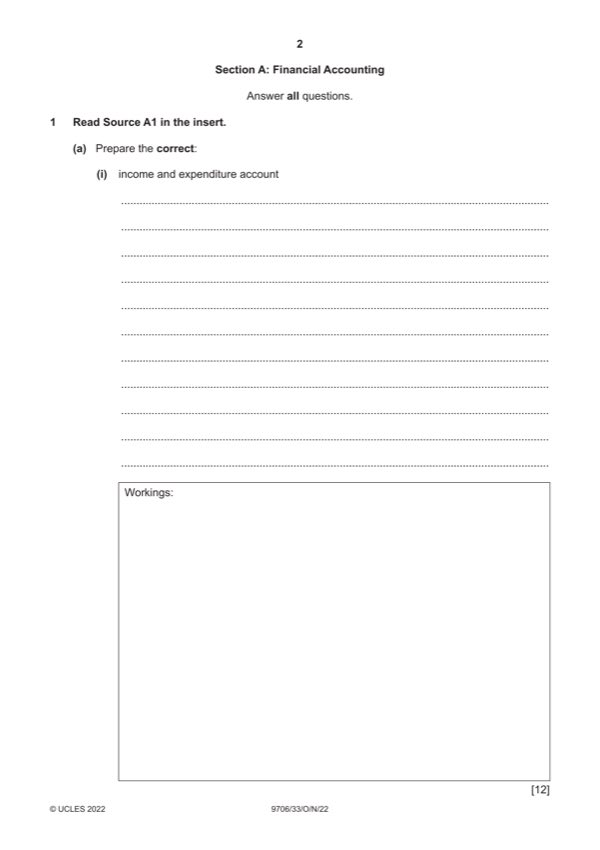

Question 1

Original paper page 2
Part 1(a)(i) — solution
GHY Club 12
Income and expenditure account for the year ended 31 December 2021
$ $
Subscriptions W1 9 400 (4)
Profit (1) from sales of refreshments W2 425 (4)
Mark points
- Include the ideas shown in the solution above.
Part 1(a)(ii) — solution
Statement of financial position at 31 December 2021 7
$ $
Non-current assets
Fixtures at valuation 9 100
Current assets
Inventory 170 (1)
Subscriptions in arrears 200 (1) 370
Total assets 9 470
Accumulated fund at 1 January 2021 7 940
Surplus for the year 1 135 (1)OF
Accumulated fund at 31 December 2021 9 075 (1)OF
Current liabilities
Owing to suppliers 95 (1)
Subscriptions in advance 250 (1)
Bank overdraft 50 (1) 395
Total fund and liabilities 9 470
Mark points
- Include the ideas shown in the solution above.
Part 1(b) — solution
Funds should be received earlier. (1) 3
Irrecoverable debts should be avoided. (1)
Some members would have paid later and their subscriptions would be lost. (1)
Accept other valid points
Decision (1) Max. (2) for comments
Mark points
- Include the ideas shown in the solution above.
Part 1(c) — solution
Life membership receipts are credited to a life membership fund (1) and released to the income and expenditure account 3
over a number of years (1)
Accruals concept (1)
2022 Page 8 of 17
9706/33 Cambridge International AS & A Level – Mark Scheme October/November 2022
Mark points
- Include the ideas shown in the solution above.